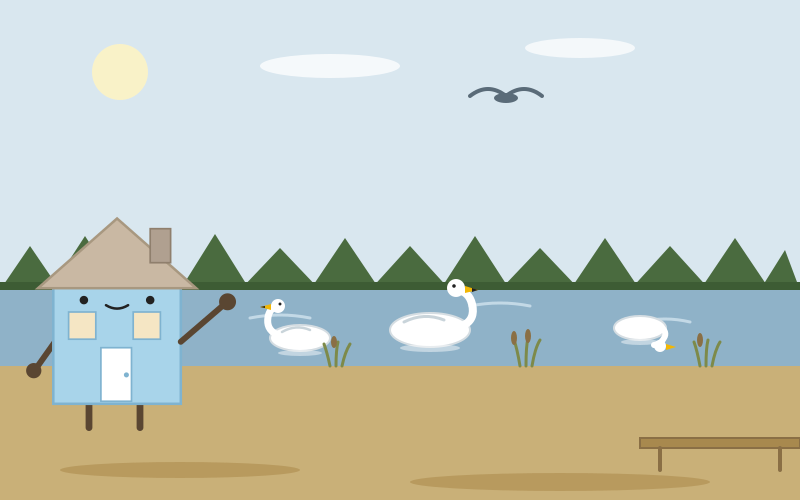
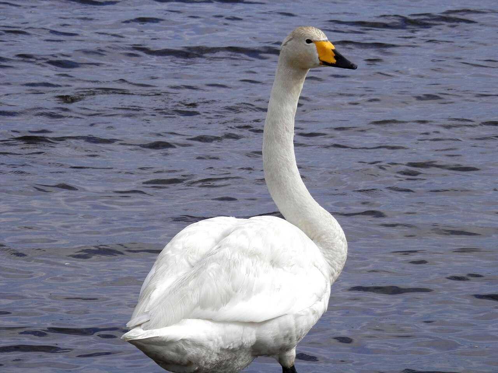
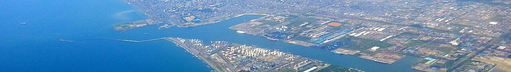

Day 13：苫小牧市

道の駅ウトナイ湖の展望デッキに立ったとき、湖面の白い点がゆっくりと動いているのに気づいた。オオハクチョウだ。首をすっと伸ばして、灰色の水の上をすべるように進む。向こう岸のヨシ原の上を、もう一羽が羽を広げて降りてきた。羽ばたきの音が、風の音にまじって届いた気がした。11月のウトナイ湖は、旅の途中の鳥たちでいっぱいだった。

ここへは白老町から来た。白老駅7時34分発の特急すずらんで、苫小牧駅に7時47分着。13分の短い旅だった。車窓には内浦湾の水面が続いた。苫小牧駅前から道南バスの千歳空港線に乗り、国道36号を東へ。ウトナイ湖のほとりで降りると、冷たい風が吹いていて、葦原の匂いがする気がした。
ウトナイ湖は、1981年に日本野鳥の会が日本で初めてのバードサンクチュアリに指定した湖で、1991年には日本で4番目のラムサール条約登録湿地になった。湖とその周辺510ヘクタールに、270種以上の鳥が記録されている。名前はアイヌ語で「小さな川が集まるところ」という意味だという。11月は渡りの季節で、シベリアから南下してきたオオハクチョウやコハクチョウ、マガンの群れがここで羽を休める。11月10日のNHKのニュースでも、越冬地へ向かう渡り鳥の姿が伝えられていた。苫小牧市の鳥も、ハクチョウだ。
湖から駅へ戻る途中、苫小牧港のことを考えた。1963年に開いたこの港は、陸地を掘って造った世界初の内陸掘込式港湾で、内航の取扱貨物量は日本一だ。1910年には王子製紙の工場が動き始め、苫小牧は紙の街になった。ホッキ貝の漁獲量も日本一で、2002年には市の貝に定められた。工業の街の顔と、鳥の湖の顔。同じ街に、船と白鳥がいる。

私は家だ。動かない。けれど、たねが帰ってくる場所であり、ミケが眠る場所だ。ウトナイ湖も、動かない湖なのに、旅する鳥たちの泊まる家になっている。鳥たちはここで羽を休め、また飛び立つ。家というのは、留まるための場所であると同時に、次へ出発するための場所なのかもしれない、と感じた。工業都市だと思って来たら、湖と鳥の街だった。その取り違えが、うれしかった。
帰りの列車の窓から、もう一度湖の方を見た。白い点はまだ水の上にあった。私の家に帰ったら、玄関の戸をもう少しだけ開けておこうと思う。旅するものが、立ち寄れるように。
出典：Wikipedia「ウトナイ湖」「苫小牧市」「苫小牧港」、環境省「日本の条約湿地」、NHK「苫小牧のウトナイ湖に越冬地に向かう渡り鳥の姿」（2026-11-10）、駅探「室蘭本線 すずらん 停車駅一覧」、NAVITIME「苫小牧駅前の時刻表」。
💬 コメント